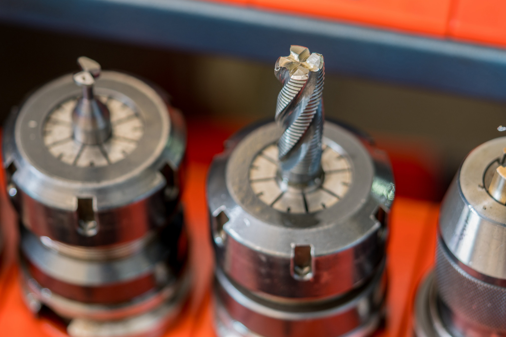
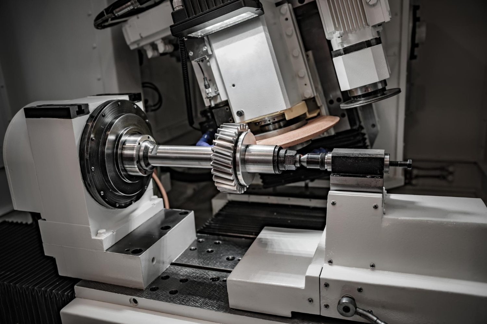

CNC Setter-Operator (Milling)
DMG-Mori 3 and 5-axis machines. You'll be setting, proving out, and running first-offs on aerospace, F1 and sub-sea work. Programming experience welcome, not essential.
View role →
+ Careers
You want to spend your day on jobs that have to be right. Aerospace brackets, F1 components, sub-sea fittings, medical parts — on machines that get reinvested in every year. Family-run shop in Grimsby. Same standards since 1992.
+ Inside the shop
Thirty-plus years, family-run, in Grimsby. The family running the shop knows everyone in the building. The foreman knows every job on the floor. There aren't five layers of management between you and a decision.
The shop is clean, well-lit, organised. Latest equipment. Calibrated inspection. Fresh tooling. Every year.
Engineers buy from us because the work lands right. The work lands right because the people doing it know what they're doing and have the kit to do it properly.


+ What you get
+ Open roles
4 roles · Grimsby · Updated this month
All apply via one form ↓DMG-Mori 3 and 5-axis machines. You'll be setting, proving out, and running first-offs on aerospace, F1 and sub-sea work. Programming experience welcome, not essential.
View role →Citizen Miyano BNE51 MSY with Hydrafeed Rota-Rack. Dual-spindle, dual-turret, bar-fed production. Bar-feed experience an advantage. Unmanned overnight running.
View role →School-leaver or college route. Day-release supported. You'll start on the shop floor with experienced setters and work up through the machines, the inspection room, and the programming side.
View role →CMM operation, first-article inspection, DIR generation, ISO 9001:2015 quality system. You'll own the documentation behind every batch leaving the shop.
View role →+ Apprenticeship pathway
College day-release alongside hands-on time with experienced setters. Drawings, measuring, materials, tool changes, machine safety.
Operating across milling, turning and sliding head. Time in the inspection room on the CMM. Time alongside the programmers.
Setting, proving out, first-offs. From here the pathway opens up: programming, foreman, inspection lead. You decide where it goes.
+ How to apply
The form, a CV upload, and a short note on why this work interests you. Every application read. Reply inside one working week.
General applications welcome any time — no role open today doesn't mean there won't be one in a month.
+ FAQs
For setter roles: experience matters more than the certificate. If you've set production CNC machines before, send the application.
For apprentices: no — that's the point of the apprenticeship. GCSEs in maths and a real interest in how things are made are the baseline.
Day shift, Monday to Friday. The machines run on overnight, unmanned, with tool-monitoring. You go home at the end of the day shift.
Small enough that the family running the shop knows everyone, big enough that there's always work on. You're not the only one on a machine.
Mastercam, primarily. Cross-training onto it is part of the pathway from operator to programmer.
Yes. Drop us a line on the form or by email and we'll set a time. Pick the shoes you don't mind getting swarf on.
Yes. Send a general application. We'd rather hear from someone good and have your CV on file than miss the chance when a role opens.
+ Send your CV
Send your CV. Whoever's hiring will take a proper look and come back inside a week.